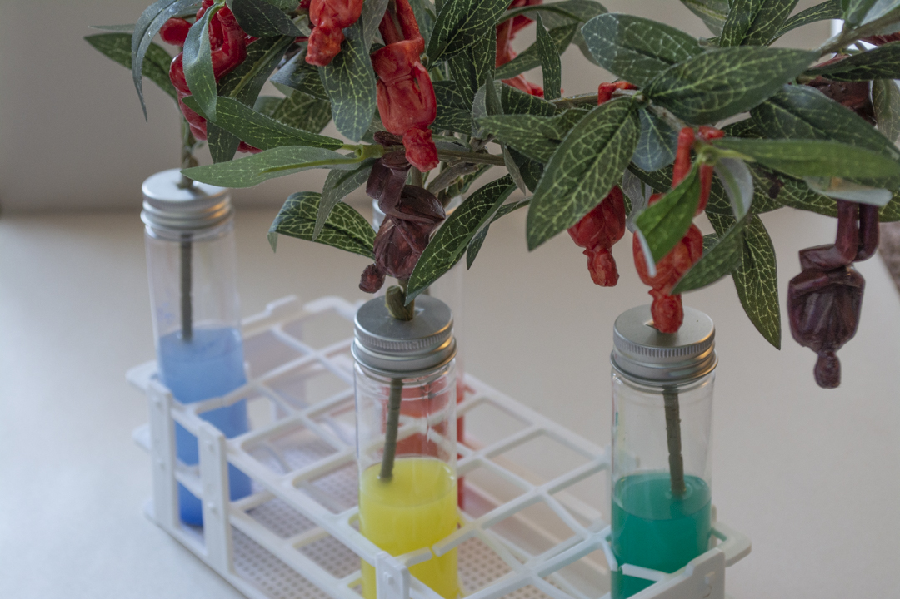

Forbidden Fruit (2019)
Artificial Tree, Test tube, Test tube stand,
Acrylic paint, and Plastic figure
This piece is made based on the process of selective breeding of apple and the story of Adam and Eve in order to criticize gene modification and designer babies.
The idea of a designer baby is exactly the same idea as the selective breeding of apple to get sweeter, stronger, and more beautiful ones.
Forbidden fruit often implies something you want to get more when you are prohibited to do so.
Gene modification has been criticized but always the field that human is so curious about.
Since I believe the nurture theory, the idea of a designer baby sounds crazy to me.
I put different color in the test tubes, and based on that color, the color of apple changes in this work.
However, by making an apple shape out of my body, I want to reflect on myself more deeply about the topic.
What if gene modification could make me a better person physically and mentally? Do my kids in the future need that too?

⇠ ⇢
-

-

-

-